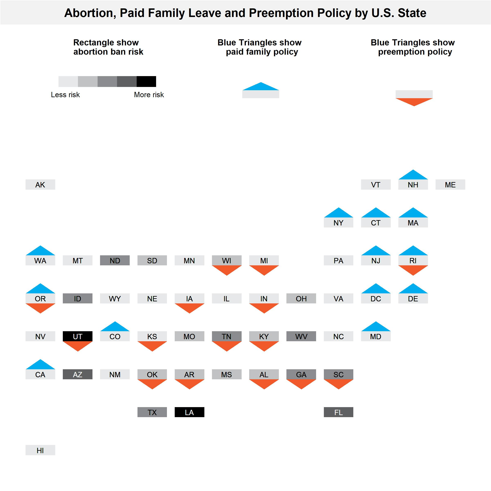

I’m hoping to make a figure that shows different policy statuses of states (abortion ban, proposed abortion ban, no abortion ban; Paid family leave, no paid family leave; paid family leave preemption, no preemption), with the states in the location of the US map…
I think geofacet mightttt get us close to the figure I’m hoping to make, but not quitee there.
Example
Evaluation
Just a brief breakdown of the plot above from the original article. There are two layers: 1) rectangles show abortion policy categories 2) triangles show various degrees of coverage within sexual education by topic (contraception in blue vs abstinence in orange). In other words larger/more-orange triangle at bottom indicates more sexual seduction emphasize abstinence and large/more-blue triangle at top indicates more sexual education emphasis on contraception. In terms of data there each state would have three points: abortion policy categories, coverage of contraception, coverage of abstinence.
Lets take a look at the data sent over along with this request.
Code
library(janitor)library(readxl)library(tidyverse)library(geofacet)library(cowplot)## raw dataraw_data = readxl::read_excel(path ="raw-data/family medical leave preemption dataset 8-11-22.xlsx",sheet ='Sheet2') %>%drop_na() %>%select(name =1, family_leave =2, preemption =3, abortion_ban_risk =4) %>%mutate_all(~as.character(.x))## clean state codesxwalk_states = geofacet::state_ranks %>%select(name, state) %>%distinct()data = raw_data %>%mutate(name = name %>%recode("Washington DC"="District of Columbia","New Hampshire*"="New Hampshire"),) %>%left_join(xwalk_states)data
Adapting this visualization to the table above would give the following features:
The rectangle would be similiar with shade mapping to the abortion ban risk
The top blue triangle would map to family leave.
The bottom orange triangle would map to preemption family leave. I am assuming preemption is bad?
Proof of concept
The whole workflow relies on geofacet::face_geo(). The main function in this package is facet_geo() and its use can be thought of as equivalent to ggplot2’s facet_wrap() except for the output it creates. The first step is to create a function that creates the individual state plots.
Code
## Set coordinatescontainer_width_height =10# a 10 by 10 coordinate systemrect_width =6rect_height =3rect_xmin =2rect_xmax = rect_xmin + rect_widthrect_x_mean =mean(c(rect_xmin,rect_xmax))rect_ymin =4rect_ymax = rect_ymin + rect_height ## Append coordinates to data for geom_polygondata_w_coords = data %>%mutate(top_triangle_x =list(c(rect_xmin,rect_xmax,rect_x_mean)),top_triangle_y =list(c(rect_ymax,rect_ymax,rect_ymax+rect_height)),bottom_triangle_x =list(c(rect_xmin,rect_xmax,rect_x_mean)),bottom_triangle_y =list(c(rect_ymin,rect_ymin,rect_ymin-rect_height)) ) %>%unnest(cols =c(top_triangle_x, top_triangle_y, bottom_triangle_x, bottom_triangle_y))## create a function to make basic shapesgeom_hex_for_alina_poc =function(data){ data %>%ggplot() +geom_rect(aes(xmin =0, xmax =10, ymin =0, ymax =10), fill ="white") +# 10 by 10 containergeom_rect(aes(xmin = rect_xmin, xmax = rect_xmax,ymin =rect_ymin, ymax = rect_ymax), # add rectanglecolor ="black", fill ="grey") +geom_polygon(aes(x=top_triangle_x,y=top_triangle_y), fill ='blue') +# top trianglegeom_polygon(aes(x = bottom_triangle_x, y = bottom_triangle_y), fill ='red') +# bottom triangletheme_void()}## Test function to plot for a single statedata_w_coords %>%filter(name =="Alabama") %>%geom_hex_for_alina_poc()
Great now let’s us this just append a geofacet::face_geo() to do do the by state faceting; note we are now passing all the states data.
title =ggdraw() +draw_label("Abortion, Paid Family Leave and Preemption Policy by U.S. State",fontface ='bold',x =0.5,hjust =0.5,size =14 ) +theme_void()+theme( plot.margin =margin(0, 0, 0, 0),plot.background =element_rect(fill ="#f2f2f2", colour ='white' ), )legend =plot_grid(rect_legend,hex_legend_blue,hex_legend_red,ncol =3,rel_widths =c(1, 1, 1))figure =plot_grid(title,NULL, legend,NULL, plot,ncol =1,rel_heights =c(0.5,0.2,2,0.2,7)) ggsave(filename ="output/issue5.jpeg",plot = figure,height =8,width =8 )

Source Code
---author: Ran Lidate: "8/10/2022"title: "Visualization faceted by state"description: "Prototype a Abortion and Paid Family Leave Figure using geofacet"categories: - visualization - infographicformat: html: toc: true toc-location: left df-print: paged code-fold: true code-tools: trueexecute: warning: falseeditor_options: chunk_output_type: console---# Issue**URL: https://github.com/Drexel-UHC/analytics-core/issues/7**> I'm hoping to make a figure that shows different policy statuses of states (abortion ban, proposed abortion ban, no abortion ban; Paid family leave, no paid family leave; paid family leave preemption, no preemption), with the states in the location of the US map...>> I think geofacet mightttt get us close to the figure I'm hoping to make, but not quitee there.# Example{fig-align="center"}# EvaluationJust a brief breakdown of the plot above from the [original article](https://www.scientificamerican.com/article/graphic-many-states-that-restrict-or-ban-abortion-dont-teach-kids-about-sex-and-pregnancy/). There are two layers: 1) rectangles show abortion policy categories 2) triangles show various degrees of coverage within sexual education by topic (contraception in blue vs abstinence in orange). In other words larger/more-orange triangle at bottom indicates more sexual seduction emphasize abstinence and large/more-blue triangle at top indicates more sexual education emphasis on contraception. In terms of data there each state would have three points: abortion policy categories, coverage of contraception, coverage of abstinence.Lets take a look at the data sent over along with this request.```{r}library(janitor)library(readxl)library(tidyverse)library(geofacet)library(cowplot)## raw dataraw_data = readxl::read_excel(path ="raw-data/family medical leave preemption dataset 8-11-22.xlsx",sheet ='Sheet2') %>%drop_na() %>%select(name =1, family_leave =2, preemption =3, abortion_ban_risk =4) %>%mutate_all(~as.character(.x))## clean state codesxwalk_states = geofacet::state_ranks %>%select(name, state) %>%distinct()data = raw_data %>%mutate(name = name %>%recode("Washington DC"="District of Columbia","New Hampshire*"="New Hampshire"),) %>%left_join(xwalk_states)data```Adapting this visualization to the table above would give the following features:1. The rectangle would be similiar with shade mapping to the abortion ban risk2. The top blue triangle would map to family leave.3. The bottom orange triangle would map to preemption family leave. I am assuming preemption is bad?# Proof of conceptThe whole workflow relies on [`geofacet::face_geo()`](https://hafen.github.io/geofacet/). The main function in this package is facet_geo() and its use can be thought of as equivalent to ggplot2's facet_wrap() except for the output it creates. The first step is to create a function that creates the individual state plots.```{r}## Set coordinatescontainer_width_height =10# a 10 by 10 coordinate systemrect_width =6rect_height =3rect_xmin =2rect_xmax = rect_xmin + rect_widthrect_x_mean =mean(c(rect_xmin,rect_xmax))rect_ymin =4rect_ymax = rect_ymin + rect_height ## Append coordinates to data for geom_polygondata_w_coords = data %>%mutate(top_triangle_x =list(c(rect_xmin,rect_xmax,rect_x_mean)),top_triangle_y =list(c(rect_ymax,rect_ymax,rect_ymax+rect_height)),bottom_triangle_x =list(c(rect_xmin,rect_xmax,rect_x_mean)),bottom_triangle_y =list(c(rect_ymin,rect_ymin,rect_ymin-rect_height)) ) %>%unnest(cols =c(top_triangle_x, top_triangle_y, bottom_triangle_x, bottom_triangle_y))## create a function to make basic shapesgeom_hex_for_alina_poc =function(data){ data %>%ggplot() +geom_rect(aes(xmin =0, xmax =10, ymin =0, ymax =10), fill ="white") +# 10 by 10 containergeom_rect(aes(xmin = rect_xmin, xmax = rect_xmax,ymin =rect_ymin, ymax = rect_ymax), # add rectanglecolor ="black", fill ="grey") +geom_polygon(aes(x=top_triangle_x,y=top_triangle_y), fill ='blue') +# top trianglegeom_polygon(aes(x = bottom_triangle_x, y = bottom_triangle_y), fill ='red') +# bottom triangletheme_void()}## Test function to plot for a single statedata_w_coords %>%filter(name =="Alabama") %>%geom_hex_for_alina_poc()```Great now let's us this just append a [`geofacet::face_geo()`](https://hafen.github.io/geofacet/) to do do the by state faceting; note we are now passing all the states data.```{r}data_w_coords %>%geom_hex_for_alina_poc() +facet_geo(~ state) ```Great I think this approach is getting us to what we want.# Ggplot codeThere are a few things to do to polish it a bit.- [x] display triangles based on the data features- [x] display abortion ban risk as shade of triangle- [x] minimize the inidividual plot margins (to make the layout more similiar to our example)- [x] remove facet_wrap strip text/label- [x] move the 2 letter state abbrv into the rectangle## Plot```{r}## Set coordinatesheight =10padding_x =1width =8rect_xmin = padding_xrect_xmax = width + padding_xrect_x_mean =mean(c(rect_xmin,rect_xmax))rect_ymin = height/3rect_ymax = rect_ymin*2## Manual colors for data featuresabortion_colors =c("0"="#e7e8e9","1"="#8a8c8f", "2"="#000000")xwalk_colors =c(abortion_colors,"white"="white","black"="black","0_family_leave"="white","1_family_leave"="#00aeef","0_preemption"="white","1_preemption"="#f1592a") ## Operationalize data for plotdata_processed = data %>%## Append coordinates to data for geom_polygonmutate(top_triangle_x =list(c(rect_xmin,rect_xmax,rect_x_mean)),top_triangle_y =list(c(rect_ymax,rect_ymax,height)),bottom_triangle_x =list(c(rect_xmin,rect_xmax,rect_x_mean)),bottom_triangle_y =list(c(rect_ymin,rect_ymin,0)) ) %>%unnest(cols =c(top_triangle_x, top_triangle_y, bottom_triangle_x, bottom_triangle_y)) %>%## operationalize colorsmutate(state_text =ifelse(as.numeric(abortion_ban_risk)>1, "white","black"),family_leave =paste0(family_leave,"_family_leave"),preemption =paste0(preemption,"_preemption"))## create a function to make basic shapesgeom_hex_for_alina =function(gg){ gg +## add rectanglegeom_rect(aes(xmin = rect_xmin, xmax = rect_xmax, ymin = rect_ymin, ymax = rect_ymax, fill = abortion_ban_risk)) +## Add state abbrv textgeom_text(aes(label = state, color = state_text),x = height/2, y = height/2,size =3)+## Top triangle (family leave)geom_polygon(aes(x=top_triangle_x,y=top_triangle_y, fill = family_leave)) +## Bottom triangle (preemption)geom_polygon(aes(x = bottom_triangle_x, y = bottom_triangle_y, fill = preemption)) +## Manual colorsscale_fill_manual(values = xwalk_colors) +scale_color_manual(name ="state_text", values = xwalk_colors) +theme_void()+theme(## Completely remove facet labelsstrip.background =element_blank(),strip.text.x =element_blank(),## Remove legendlegend.position ='none' )}## Test facetplot = data_processed %>%ggplot() %>%geom_hex_for_alina() +facet_geo(~ state, grid ="us_state_grid2") +theme(plot.margin =margin(1, 1, 1, 1, "cm"))plot```## Legend 1: Rectangle```{r}side =10padding =1.5rect_width = (side -2*padding)/3legend_y =6legend_height =1.5dfa =tibble(xmin = padding +0:2*rect_width,xmax = padding +1:3*rect_width,ymin = legend_y,ymax = legend_y + legend_height,fill =unname(abortion_colors))legend_risk =ggplot() +## Container (10 by 10)geom_rect(aes(xmin =0, xmax =10, ymin =0, ymax =10),fill ="white") +## Legend for rectanglesgeom_rect(dfa, mapping =aes(xmin = xmin, xmax = xmax, ymin = ymin, ymax = ymax),fill = dfa$fill) +## Left labelgeom_text(aes(label ="Accessible"),x =1.5, y = legend_y -1,size =3) +## Center labelgeom_text(aes(label ="Hostile"),x =5, y = legend_y -1,size =3) +## Rigth labelgeom_text(aes(label ="Illegal"),x =8.5, y = legend_y -1,size =3) +theme_void()title_rect <-ggdraw() +draw_label("Rectangle show state\nattitude towards abortion",fontface ='bold',x =0.5,hjust =0.5,size =10 ) +theme(# add margin on the left of the drawing canvas,# so title is aligned with left edge of first plotplot.margin =margin(5, 0, 0, 0) )rect_legend =plot_grid( title_rect, legend_risk,ncol =1,rel_heights =c(2, 8))rect_legend```## Legend 2: Paid family leave```{r}## Create funciton to layout for legendgeom_hex_legend_for_alina =function(gg){ gg +geom_rect(aes(xmin =0-1*height*1.4, xmax = height +1*height*1.4, ymin =0-1*height, ymax = height +1*height),fill ="white") }## Legend 2: Blue triangletitle_hex_blue <-ggdraw() +draw_label("Blue Triangles show \n paid family policy",fontface ='bold',x =0.5,hjust =0.5,size =10 ) +theme( plot.margin =margin(5, 0, 0, 0))legend_hex_blue = data_processed %>%filter(state =="WA") %>%mutate(state ="") %>%ggplot() %>%geom_hex_legend_for_alina() %>%geom_hex_for_alina()hex_legend_blue =plot_grid( title_hex_blue, legend_hex_blue,ncol =1,rel_heights =c(2, 8))hex_legend_blue```## Legend 3: Preemption```{r}## Legend 3: Red triangle title_hex_red <-ggdraw() +draw_label("Red triangles show state preemption\nof paid family policies",fontface ='bold',x =0.5,hjust =0.5,size =10 ) +theme(plot.margin =margin(5, 0, 0, 0) )legend_hex_red = data_processed %>%filter(state =="FL") %>%mutate(state ="") %>%ggplot() %>%geom_hex_legend_for_alina() %>%geom_hex_for_alina()hex_legend_red =plot_grid( title_hex_red, legend_hex_red,ncol =1,rel_heights =c(2, 8))hex_legend_red```# Final LayoutThis is saved in "./output/issue5.jpeg".```{r}title =ggdraw() +draw_label("Abortion, Paid Family Leave and Preemption Policy by U.S. State",fontface ='bold',x =0.5,hjust =0.5,size =14 ) +theme_void()+theme( plot.margin =margin(0, 0, 0, 0),plot.background =element_rect(fill ="#f2f2f2", colour ='white' ), )legend =plot_grid(rect_legend,hex_legend_blue,hex_legend_red,ncol =3,rel_widths =c(1, 1, 1))figure =plot_grid(title,NULL, legend,NULL, plot,ncol =1,rel_heights =c(0.5,0.2,2,0.2,7)) ggsave(filename ="output/issue5.jpeg",plot = figure,height =8,width =8 )```{fig-align="center"}